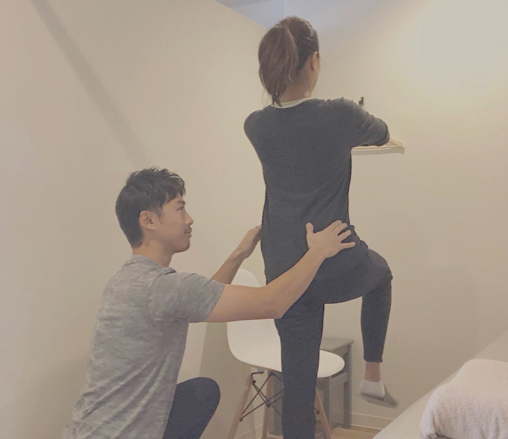
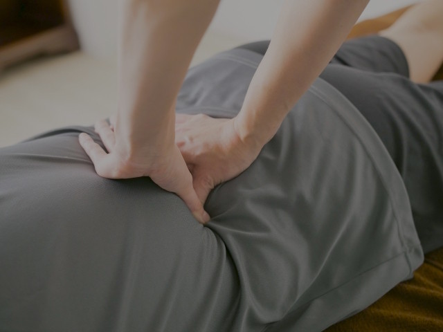
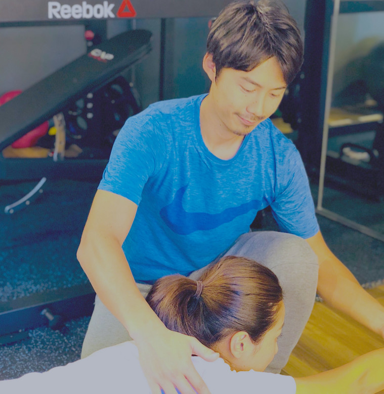
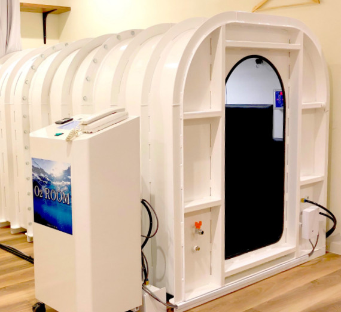
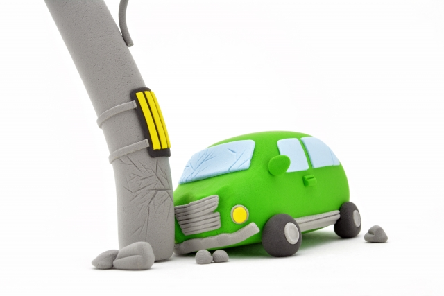

みなさん1人1人の顔が違うように、カラダのゆがみも1人1人異なります。
当院では来院された患者様の状態を、カウンセリングでしっかりと把握させて頂き、
1人1人に合わせたオーダーメイドの治療を行っていきます。
また、運動療法・パーソナルトレーニングを積極的に行っていくことで、
再びゆがみが起きにくいカラダ作りを目指します。
「痛くなる前よりも、動けるカラダへ」
その目標に、皆様がたどり着けるよう、精一杯お手伝いさせて頂きます。


皆さんも小さい頃、お腹がいたくなった時、お母さんに手でさすってもらった記憶があるかと思います。
不思議と、お腹の痛みが和らいだ経験をされた方は多いのではないでしょうか。
この「手当て」こそ治療の基本であると考えます。
当院では「手当て」、すなわち手技による治療を中心に行っていきます。

当院は、札幌市内でも数少ない「本格的なパーソナルトレーニングが行える整骨院」です。
パーソナルトレーニングと聞くと、一般の方は少し敷居が高いと感じるかもしれません。
しかし、ご自分の姿勢や動作のクセ、カラダの弱点を知り、それらを改善するトレーニングを行うことは、
スポーツ選手だけでなく、むしろ一般の方々にこそ必要なものであると私たちは考えています。
肩こりや腰痛を改善したい、キレイな姿勢になりたい、体重を落としたい、
筋肉を付けてかっこいい身体になりたい、スポーツの成績を伸ばしたいなど、
お客様1人1人に合わせたトレーニングを、マンツーマンで指導させて頂きます。

当院では、全国の病院、大学、プロスポーツチームが多数導入している「高気圧酸素ルーム」を導入しています。
人間の身体には約60兆個の細胞があり、そのすべてが酸素を必要としています。高気圧酸素ルームに入ることで、通常よりも多くの酸素を取り込み、体の状態を整えられます。

むち打ちによる首や肩の痛み、頭痛、吐き気、打撲、腰痛、脚のしびれなど、交通事故の後遺症は実にさまざまです。
放っておくと良くならないばかりか、かえって症状が悪化し、日常生活に支障をきたすことも少なくありません。
当院では、交通事故後の治療も、患者様1人1人に合わせて親切、丁寧に行わせて頂きます。
一般の方は聞きなれない言葉だと思いますが、
「AT」とは日本スポーツ協会公認のアスレティックトレーナーという資格のことを指します。
スポーツ現場における捻挫や肉離れ、打撲などの急性の外傷から、腰痛・野球肩・テニス肘・シンスプリントなどの、
over use(使いすぎ)によるスポーツ障害まで、スポーツにおける様々なケガを専門としています。
当院では、ATによる専門のスポーツ外傷・障害の処置や治療、
また競技復帰までのリハビリテーションを受けることができます。
※健康保険が使えるかどうか、ご自身での判断は難しいと思います。 辛い箇所がある方は、まずはお気軽にご相談ください。
原因がはっきりとしているケガの治療につきましては、健康保険を使うことができます。
手技療法・電気療法・温熱療法などを組み合わせて患者様お一人お一人を丁寧に治療させて頂きます。
健康保険が適応となるケガの例
電話番号
011-839-0355
住所
〒064-0919
札幌市中央区南19条西11丁目2-24
ビレッジ11 1Fテナント
診療時間
| 月 | 火 | 水 | 木 | 金 | 土 | 日 | 祝 | |
|---|---|---|---|---|---|---|---|---|
| 09:00〜12:00 |
14:00
|
休 | 休 | |||||
| 14:00〜19:00 | ||||||||
| 19:00〜20:00 |
※ 当院は予約制となっております。
駐車場 (3台完備)
アクセス
お問い合わせ